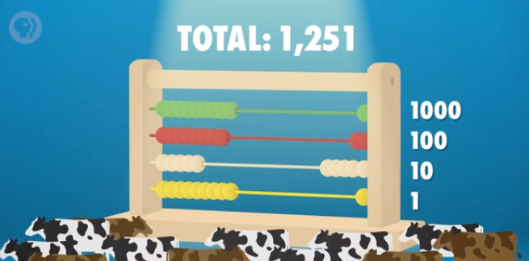
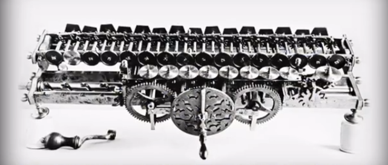
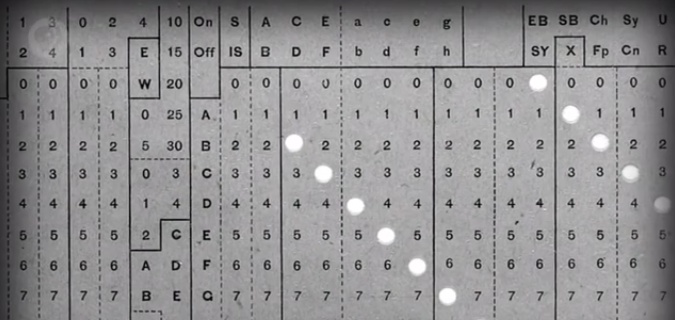

i.e. Early Computing
Hello world！我是 Carrie Anne，欢迎收看计算机科学速成课（Crash Course Computer Science）！

> Carrie Anne 小姐姐
在这个系列中，我们会学习 Bits（位），Bytes（字节），晶体管（transistors），逻辑门（logic gates），一直到操作系统，虚拟现实和机器人！我们要学很多东西，但预先说明，我们 不会 教你怎么编程，我们会从高层次上纵览一系列计算机话题。
计算机是当今世界的命脉，如果突然关掉所有的计算机，电网会关闭，车辆会相撞，飞机会坠毁，净水厂会关闭，证券市场会停止运作，装满食物的卡车不知运往何方，员工得不到薪水，甚至很多和计算机无关的东西，例如 DFTBA 的 T 恤和我现在坐的椅子也都是在计算机管理的工厂中制造的。
计算机改变了我们生活中几乎所有方面。
我们也不是第一次遇到推动全球发展的科技了。
工业革命（Industrial Revolution）中生产能力的提高，大幅提升了农业，工业，畜牧业的规模。机械化导致更好的收成，更多的食物，商品可以大批量生产。旅行和通讯变得更便宜更快，生活质量变得更好。
> 蒸气车
计算机和工业革命有一样的影响。
从自动化农业和医疗设备到全球通信和教育机会，还有虚拟现实和无人驾驶汽车等新领域，现在这个时代很可能会被后人总结成 “信息时代”。
你的智能手机中有数十亿个晶体管，看起来好像很复杂，但实际上它是很简单的机器，通过一层层的 抽象（abstraction） 来做出复杂操作。
在这个系列中，我们会一层层讲解，从最底层的 1 和 0，到逻辑门，CPU，操作系统，整个互联网，以及更多~~
不用担心，正如在网上买 T 恤的人不用知道网站代码是怎么写的，设计师不用知道数据包（packets）是怎么传输的，设计路由器的工程师不用理解晶体管的逻辑。
本系列中每个视频会接着上集继续讲，但并不依赖前面的视频。等这个系列结束后，希望你能了解计算机在你的人生以及社会中扮演什么角色，以及这个人类史上最伟大的发明（可以这样说啦）是怎么开始的。
它对未来还会有更大的影响。
但深入之前，我们应该从计算的起源讲起，虽然电子计算机才出现不久，但人类对计算的需求早就有了。
公认最早的计算设备是算盘（abacus），发明于"美索不达米亚"，大约公元前 2500 年。它是手动计算器，用来帮助加减数字，它存储着当前的计算状态，类似于如今的硬盘。人们制造算盘，是因为社会的规模已经超出个人心算的能力。一个村庄可能有上千个人和上万头牛。
= “公认”？算盘起源，此处存疑，待求证。
算盘有很多变种，但我们来看一个基础版，每行代表 10 的不同次方。最底下那行，一个珠子代表 10 的 0 次方，也就是 1，再上面一行是 10 的 1 次方（也就是 10），再上面一行是 10 的 2 次方 （以此类推）……
假设最底部的 3 颗珠子，代表 3 头牛。假设再买 4 头牛，只需要向右移动 4 颗珠子，共 7 个珠子。但如果再买 5 头，珠子就不够用了，所以把所有珠子移回左边。在第二排把 1 颗珠子向右移动，代表 10，然后最底下那行，向右移动 2 颗珠子，代表 12。
这种方法处理大数字很有效。假设要表示 1251，从下往上：第一行移 1 个，第二行移 5 个，第三行移 2 个，第四行移 1 个。
> 计量‘牛牛’
我们不用记在脑子里，算盘会记住。
在接下来 4000 年，人类发明了各种巧妙的计算设备。比如星盘，让船只可以在海上计算纬度，或计算尺，帮助计算乘法和除法。人们还创造了上百种时钟，算日出，潮汐，天体的位置，或纯粹拿来计时。这些设备让原先很费力的事变得更快，更简单，更精确，降低了门槛，加强了我们的能力。
记笔记！（敲黑板）这个系列会多次提到这一点。
计算机先驱 Charles Babbage 说过：“随着知识的增长和新工具的诞生，人工劳力会越来越少”。
然而，这些设备那时都不叫"计算机"。最早使用 “计算机” 一词的文献来自 1613 年的一本书，作者 Richard Braithwait。然而指的不是机器，而是一种职业。
> Hi, Computers.
Braithwait 说：“我听说过的计算者里最厉害的，能把好几天的工作量大大缩减。”
那时，“Computer” 指负责计算的人。“Computer” 偶尔会用机器帮忙，但大部分时候靠自己。这个职位一直到 1800 年代还存在，之后 “Computer” 逐渐开始代表机器。
> 步进计算器
其中"步进计算器"（Step Reckoner）最有名，由德国博学家戈特弗里德·莱布尼茨建造于 1694 年。
= 对，就是和牛顿先后发明微积分的那个莱布尼茨……
莱布尼茨说过 “… 让优秀的人浪费时间算数简直侮辱尊严，农民用机器能算得一样准。”
“步进计算器"有点像汽车里的里程表，不断累加里程数。它有一连串可以转动的齿轮（gears），每当一个齿轮转过 9，它会转回 0，同时让旁边的齿轮前进 1 个齿，就像算盘超过 10 一样。做减法时，机器会反向运作。利用一些巧妙的机械结构，步进计算器也能做乘法和除法。
乘法和除法实际上只是多个加法和减法。举例，17 除以 5，我们只要减 5，减 5，再减 5，直到不能再减 5，就知道了 17=5x3+2 。步进计算器可以自动完成这种操作，它是第一台能做"加减乘除"全部四种运算的机器。它的设计非常成功，以至于沿用了 3 个世纪。
不幸的是，即使有机械计算器，许多现实问题依然需要很多步，算一个结果可能要几小时甚至几天，而且这些手工制作的机器非常昂贵，大部分人买不起。所以在 20 世纪以前，大部分人会用预先算好的计算表，这些计算表由之前说的 “人力计算器” 编撰。如果你想知道 867,5309 的平方根，与其花一整天来手摇 “步进计算器”，你可以花一分钟在表里找答案。
速度和准确性（Speed and accuracy）在战场上尤为重要，因此军队很早就开始用计算解决复杂问题。如何精确瞄准炮弹是一个很难的问题。19 世纪，这些炮弹的射程可以达到 1 公里以上（比半英里多一点），因为风力，温度，大气压力会不断变化，想打中船一样大的物体也非常困难。于是出现了射程表（Range Tables），炮手可以查环境条件和射击距离，然后这张表会告诉他们，角度要设成多少。这些射程表很管用，二战中被广泛应用。问题是如果改了大炮或炮弹的设计，就要算一张新表，这样很耗时而且会出错。
Charles Babbage 在 1822 年写了一篇论文，向皇家天文学会指出了这个问题，标题叫： “机械在天文与计算表中的应用”（“Note on the application of machinery to the computation of astronomical and mathematical tables”）。
💭 让我们进入思想泡泡。
Charles Babbage 提出了一种新型机械装置叫 “差分机”（the Difference Engine），一个更复杂的机器，能近似多项式（polynomials）。多项式描述了几个变量之间的关系，比如射程和大气压力，或者 Carrie Anne 要吃多少披萨才开心。多项式也可以用于近似对数（logarithmic）和三角函数（trigonometric functions），这些函数手算相当麻烦。
> ‘分析机’进行时...
Charles Babbage 在 1823 年开始建造差分机，并在接下来二十年，试图制造和组装 25,000 个零件，总重接近 15 吨。不幸的是，该项目最终放弃了，但在 1991 年，历史学家根据 Charles Babbage 的草稿做了一个差分机，而且它还管用！但更重要的是，在差分机的建造期间，Charles Babbage 构想了一个更复杂的机器 - 分析机。不像差分机，步进计算器 和以前的其他计算设备，分析机是 “通用计算机”（“general purpose computer”）。它可以做很多事情，不只是一种特定运算，甚至可以给它数据，然后按顺序执行一系列操作。它有内存，甚至一个很原始的打印机。就像差分机，这台机器太超前了，所以没有建成，然而，这种 “自动计算机”（“automatic computer”）的概念。
计算机可以自动完成一系列操作，是个跨时代的概念，预示着计算机程序的诞生。
英国数学家 Ada Lovelace 给分析机写了假想的程序，她说：“未来会诞生一门全新的，强大的，专为分析所用的语言。” 因此 Ada 被认为是世上第一位程序员（programmer）。
分析机激励了（可以这么讲）第一代计算机科学家，这些计算机科学家把很多 Charles Babbage 的点子融入到他们的机器。所以 Charles Babbage 经常被认为是 “计算之父”。
谢啦！思想泡泡
到了 19 世纪末，科学和工程领域中的特定任务会用上计算设备。但公司，政府，家庭中很少见到计算设备。然而，美国政府在 1890 年的人口普查中面临着严重的问题，只有计算机能提供所需的效率。美国宪法要求 10 年进行一次人口普查，目的是分配联邦资金，国会代表，等等。到 1880 年代，美国人口迅速增长，大部分因为移民，人口普查要七年时间来手工编制，等做完都过时了，而且 1890 年的人口普查，预计要 13 年完成，但人口普查可是 10 年一次啊！
人口普查局找了 Herman Hollerith，他发明了打孔卡片制表机（tabulating machine），他的机器是 “电动机械的”，用传统机械来计数，结构类似莱布尼茨的乘法器，但用电动结构连接其他组件。Hollerith 的机器用打孔卡（punch cards） - 一种纸卡，上面有网格，用打孔来表示数据。
> Herman Hollerith 和 ‘打孔卡片制表机’
举个例子，有一连串孔代表婚姻状况。如果你结婚了，就在 “结婚” 的位置打孔。当卡插入 Hollerith 的机器时，小金属针会到卡片上。如果有个地方打孔了，针会穿过孔。泡入一小瓶汞，联通电路，电路会驱动电机，然后给 “已婚” 的齿轮 + 1 。
= 一个简单程序的威力 - 控制联通！
> 是不是最早的‘程序’卡？
Hollerith 的机器速度是手动的 10 倍左右，使人口普查在短短两年半内完成，给人口普查办公室省了上百万美元。企业开始意识到计算机的价值，可以提升劳动力以及数据密集型任务来提升利润。比如会计，保险评估和库存管理等行业。为了满足这一需求，Hollerith 成立了制表机器公司，这家公司后来在 1924 年与其它机械制造商合并，成为了 “国际商业机器公司”，简称 IBM（The International Business Machines Corporation）。
= 利润！！！恐怕没有什么比它更吸引企业的了！
你可能听过 IBM 😂
这些电子机械的 “商业机器” 取得了巨大成功，改变了商业和政府。到了 1900 年代中叶，世界人口的爆炸和全球贸易的兴起。要求更快，更灵活的工具来处理数据，为电子计算机的发展奠定了基础。
我们下周讨论。